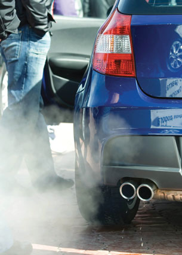
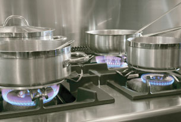

Module 6—Stoichiometry
 Explore
Explore
 Read
Read

© wrangler/shutterstock

© Dutchy, Oisterwijk/iStockphoto
People often don’t think about it, but chemical reactions involving gases are quite common. Do you recall the ideal gas law? This law was an important relationship that equated the number of moles of a gas to the conditions at which it is contained (pressure, volume, and temperature).
Read “7.3 Gas Stoichiometry” on pages 294 to 296 of your textbook. Work through “SAMPLE problem 7.3” and “COMMUNICATION examples” 1 and 2.
Use your notes or your textbook to write the following relationships that you will refer to many times in this lesson:
-
ideal gas law
-
volume of a gas at standard temperature and pressure (STP)
-
volume of a gas at standard ambient temperature and pressure (SATP)
 Discuss
Discuss
Are the general steps for stoichiometry calculations the same for both solids and gases? Do you agree with the statements and explanation provided in the paragraph following “COMMUNICATION example” 1 on page 295 of your textbook? Would it be possible to summarize the methods used to complete stoichiometry calculations for both solids and gases? Are the “SUMMARY” and the “Stoichiometry Calculations” in the margin on page 296 of your textbook adequate?
Save a copy of your answers to your course folder. You may wish to share your answers with your classmates or some other people.
 Self-Check
Self-Check
Complete “Practice” questions 1 to 3 on page 296 of your textbook.